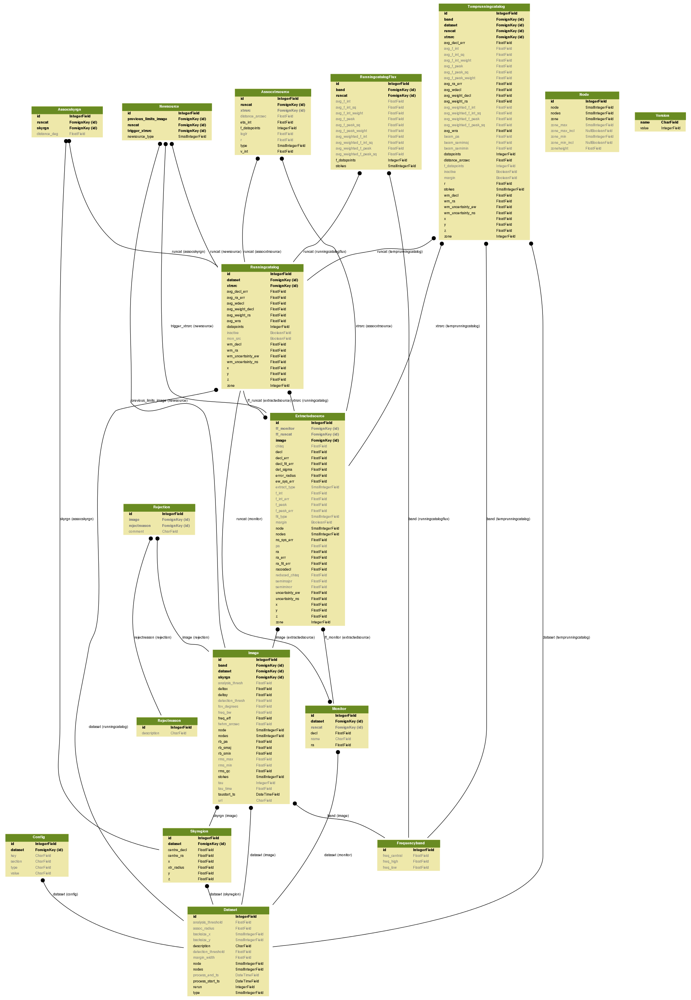

Schema reference¶
Note that this diagram is periodically updated and may not reliably reflect the current status of the development version.
Table Listing¶
assocxtrsource¶
This table stores the association between an extracted source and its runningcatalog counterpart source, where the relation might be of type 1-1, 1-n or n-1.
- runcat
- A reference to the runcatid in runningcatalog. It may be regarded as the “base” identitfier of a lightcurve, whereas the lightcurve consist of multiple frequency bands and Stokes parameters.
- xtrsrc
- This is the ID of the extracted source that could be associated to runningcatalog source. Together, the runcat_id and the xtrsrc form a unique pair.
- type
Type of association, and its description. n-m, where n is the number of runningcatalog sources, and m the number of extracted sources. (The assignment of numbers is to association types is arbitrary.)
- type = 2
- Base point of a 1-n (one-to-many) association (relates to type = 6)
- type = 3
- 1-1 association.
- type = 4
- 0-1 (zero-to-one) association, i.e. a new source.
- type = 6
- Associations of 1-n (one-to-many) type. These are updates of pre-existing associations, due to the 1-n case (relates to type = 2 association).
- type = 7
- Forced-fit to position of the null detection of a known source.
- type = 8
- Initial forced fit to a monitoring list position.
- type = 9
- Subsequent forced fit to a monitoring list position (relates to type = 8.
Note that many-to-1 relations reduce to 1-to-1 and 1-to-many associations. Therefore, there is no type specifying such a case.
- distance_arcsec
- The distance in arcsec between the associated sources, calculated by the database using the dot product Cartesian coordinates
- r
- The dimensionless distance (De Ruiter radius) between the associated sources. It is determined as the positional differences weighted by the errors, calculated by the association procedure inside the database (Scheers, 2011, chapter 3).
- loglr
- The logarithm of the likelihood ratio of the associated sources, defaults to NULL if not calculated (Scheers, 2011, chapter 3).
- v_int
- The flux coefficient of variation , \(V_{\nu}\), based on the integrated flux values up to this datapoint.
- eta_int
- The ‘reduced chi-squared’ variability index, \(\eta_{\nu}\), based on the integrated flux values up to this datapoint.
- f_datapoints
- The number of flux datapoints (including the extractedsource referenced in this entry) used to calculate the variability indices.
assocskyrgn¶
(See also skyregion table.)
This table records which runningcatalog sources we expect to see in any given skyregion. This serves two purposes: it allows us to determine when we do not see previously detected sources, presumably because they have dropped in flux (see tkp.db.nulldetections.get_nulldetections()). It also allows us to determine whether a new runningcatalog entry (i.e. a newly detected source without associated historical detections) is being detected for the first time because it is actually a new transient, or if it is simply the first time that region of sky has been surveyed (see tkp.db.associations._determine_newsource_previous_limits()).
This table is updated under 2 circumstances:
- A new skyregion is processed, and associations must be made with pre-existing runcat entries (see SQL function updateSkyRgnMembers).
- A new runningcatalog source is added, and must be associated with pre-existing skyregions (see tkp.db.associations._insert_new_runcat_skyrgn_assocs()).
- runcat
- References the associated runningcatalog ID.
- skyrgn
- References the associated skyregion ID.
- distance_deg
- Records the angular separation between the runningcatalog source and the skyregion centre, at time of first association.
config¶
A simple table of (dataset, section, key, value, type) tuples, providing a means of recording the contents of the job_params.cfg - Job Parameters Configuration file used to initiate a particular TraP processing run. This provides provenance and reproducibility for any given dataset.
dataset¶
The dataset table provides an id for grouping together results, usually from a single run of the TraP. As such, it represents a collection of images processed with a particular configuration (see also the config table).
Note that it is possible to specify a dataset_id in order to process more recent images as part of a pre-existing dataset, in which case the previously stored configuration is loaded from the config table, to ensure consistency across the dataset.
- id
- Every dataset gets a unique ID. The ID is generated by the database.
- rerun
- The value indicates how many times a dataset with a given description was processed by the pipeline. Note that every dataset still has a unique id, even when it was reprocessed. At insertion time this is incremented by 1 when the description of the dataset is already present in the table; otherwise, it defaults to 0.
- type
- Not being used.
- process_start_ts
- The timestamp of the start of processing the dataset, generated by the database.
- process_end_ts
- The timestamp of the completion of processing the dataset, generated by the database. NULL if processing is ongoing.
- detection_threshold
- The detection threshold that was used by source finder to extract sources. Value read from either the source finder parset file or the tkp.cfg file. See the PySE documentation for more information.
- analysis_threshold
- The analysis threshold that was used by source finder to extract sources. Value read from either the source finder parset file or the tkp.cfg file. See the PySE documentation for more information.
- assoc_radius
- The association radius that is being used for associating sources. Value read from either the source finder parset file or the tkp.cfg file.
- backsize_x
- Background grid segment size in x. Value read from either the source finder parset file or the tkp.cfg file. See the PySE documentation for more information.
- backsize_y
- Background grid segment size in y. Value read from either the source finder parset file or the tkp.cfg file. See the PySE documentation for more information.
- margin_width
- Margin applied to each edge of image (in pixels). Value read from either the source finder parset file or the tkp.cfg file. See the PySE documentation for more information.
- description
- A description of the dataset, with a maximum of 100 characters.
- node(s)
- Determine the current and number of nodes in case of a sharded database set-up.
extractedsource¶
This table contains all the extracted sources (measurements) of an image. Maybe source is not the right description, because measurements may be made that were erronous and do not represent a source.
Most values come from the sourcefinder procedures, and some are auxiliary deduced values generated by the database.
This table is empty before an observation. During an observation new sources are inserted into this table. After an observation this table is dumped and transported to the catalog database.
All detections (measurements) found by sourcefinder are appended to this table. At insertion time some additional auxiliary parameters are calculated by the database as well. At anytime, no entries will be deleted or updated. The TraP may add forced-fit entries to this table as well. Then extract_type is set to 1.
- id
- Every inserted source/measurement gets a unique id, generated by the database.
- image
- The reference ID to the image from which this sources was extracted.
- zone
- The zone ID in which the source declination resides, calculated by the database. The sphere is devided into zones of equal width: currently fixed to 1 degree, and the zone is effectively the truncated declination. (decl=31.3 => zone=31, decl=31.9 => zone=31). This column is primarly for speeding up source look-up queries.
- ra
- Right ascension of the measurement (J2000 degrees). Calculated by the sourcefinder procedures.
- decl
- Declination of the measurement (J2000 degrees). Calculated by the sourcefinder procedures.
- ra_err
- The 1-sigma error on ra (degrees), i.e. the square root of the quadratic sum of the fitted error (ra_fit_err) and the systematic error (ew_sys_err) after the latter has been corrected for ra inflation depending on declination. It is calculated by the database at insertion time. Note that this error is declination dependent and the source lies in the range [ra - ra_err, ra + ra_err].
- decl_err
- The 1-sigma error on declination (degrees), i.e. the square root of the quadratic sum of the fitted error (decl_fit_err) and the systematic error (ns_sys_err), calculated by the database at insertion time. Note that the source lies in the range [decl - decl_err, decl + decl_err]
- uncertainty_ew
- The 1-sigma on-sky error on ra (in the east-west direction) (degrees), ie. the square root of the quadratic sum of the error radius (error_radius) and the systematic error (ew_sys_err). It is calculated by the database at insertion time. Note that this is a positional uncertainty and is declination independent. This error is being used in the De Ruiter calculations.
- uncertainty_ns
- Analogous to uncertainty_ew.
- ra_fit_err
- The 1-sigma error on ra (degrees) from the source gaussian fitting, calculated by the sourcefinder procedures. It is important to note that a source’s fitted ra error increases towards the poles, and is thus declination dependent (see also error_radius).
- decl_fit_err
- The 1-sigma error from the source fitting for declination (degrees), calculated by the sourcefinder procedures (see also error_radius).
- ew_sys_err
- The systematic error on RA (arcsec). (As an on-sky angular uncertainty, independent of declination.) It is a telescope dependent error and is provided by the user in the pipeline configuation.
- ns_sys_err
- Analogous to ew_sys_err.
- error_radius
- Estimate of the absolute angular error on a source’s central position (arcsec). It is a pessimistic estimate, because it takes the sum of the error along the X and Y axes.
- x, y, z
- Cartesian coordinate representation of RA and declination.
- racosdecl
- The product of RA and cosine of the declination. Helpful in source look-up association queries where we use the De Ruiter radius as an association parameter.
- margin
Used for association procedures to take into account sources that lie close to ra=0 & ra=360 meridian. NOTE: Not currently used.
- True: source is close to ra=0 meridian
- False: source is far away enough from the ra=0 meridian
det_sigma
The significance level of the detection: \(20 \times f_\mathrm{peak} / \mathrm{det_sigma}\) provides the detection RMS. See Spreeuw (2010).
- semimajor
- Semi-major axis that was used for gauss fitting (arcsec), calculated by the sourcefinder procedures.
- semiminor
- Semi-minor axis that was used for gauss fitting (arcsec), calculated by the sourcefinder procedures.
- pa
- Position Angle that was used for gauss fitting (from north through local east, in degrees), calculated by the sourcefinder procedures.
- f_peak
- peak flux (Jy), calculated by the sourcefinder procedures.
- f_peak_err
- 1-sigma error (Jy) of f_peak, calculated by the sourcefinder procedures.
- f_int
- integrated flux (Jy), calculated by the sourcefinder procedures.
- f_int_err
- 1-sigma error (Jy) of f_int, calculated by the sourcefinder procedures.
- chisq, reduced_chisq
- Goodness of fit metrics for fitted Gaussian profiles. (NB. These are not yet implemented, but have been placed in the schema in advance, to avoid extra database migrations.)
- extract_type
Reports how the source was extracted by sourcefinder (Spreeuw (2010)), Currently implemented values are:
- 0: blind fit
- 1: forced fit to pixel
- 2: manually monitored position
- fit_type
Reports what fitting type was used by sourcefinder (Spreeuw (2010)). Currently implemented values are:
- 0: moments-based analysis
- 1: Gaussian fitting
- ff_runcat
- Null, except when the extractedsource is a forced fit requested due to a null-detection. In that case, it is used to link null-detection extractions to their appropriate runningcatalog entry via the assocxtrsource table. It will initially point to the runningcatalog id which was null-detected, but may change back to Null later on (after the initial association is recorded in assocxtrsource) if the runningcatalog entry forks due to a one-to-many association.
- ff_monitor
- Null, except when the extractedsource is a forced fit requested for a position in the monitor table. In that case, it identifies the relevant monitor entry, and is used in the association process.
- node(s)
- Determine the current and number of nodes in case of a sharded database set-up.
frequencyband¶
This table contains the frequency bands that are being used inside the database. Here we adopt the set of pre-defined Standard LOFAR Frequency Bands and their bandwidths as defined for MSSS. Included are frequency bands outside the LOFAR bands, in order to match the external catalogue frequency bands. When an image is taken at an unknown band, it is added to this table by the SQL function getBand(). To make it possible to easily compare images with slightly different effective frequencies, new bands are constructed by rounding the effective frequency to the nearest MHz, and assuming a band width of 1 MHz.
- id
- Every frequency band has its unique ID, generated by the database.
- freq_central
- The central frequency (Hz) of the defined frequency band. (Note that this is not the effective frequency, which is stored as a property in the image table.)
- freq_low
- The low end of the frequency band (Hz).
- freq_high
- The high end of the frequency band (Hz).
image¶
This table contains the images that are being or were processed in the TraP. Note that the format of the image is not stored as an image property. An image might be a composite of multiple images, but it is not yet defined how the individual values for effective frequency, integration times, etc are propagated to the columns of the image table. The CASA image description for LOFAR describes the structure of a LOFAR CASA Image, from which most of the data of the image table originates.
An image is characterised by
- observation timestamp (taustart_ts);
- integration time (tau);
- frequency band (band);
- Stokes parameter (stokes).
A group of images that belong together (defined by user, but not specified any further) are in the same data set (i.e. they have the same reference to dataset).
- id
- Every image is assigned a unique ID by the database.
- dataset
- The dataset to which the image belongs.
- tau
- The integration time of the image. This is a quick reference number related to tau_time. Currently this is not used.
- band
- The frequency band at which the observation was carried out. Its value refers to the ID in frequencyband, where the frequency bands are predefined. The image’s effective frequency falls within this band. If an image has observation frequency that is not in this table, a new entry will be created based an the effective
- stokes
- The Stokes parameter of the observation. 1 = I, 2 = Q, 3 = U and 4 = V. The Stokes parameter originates or is read from the CASA Main table in the coords subsection from the stokesX record. The char value is converted by the database to one of the four (tiny) integers.
- tau_time
- The integration time (in seconds) of the image. The value originates or is read from the CASA LOFAR_OBSERVATION table by differencing the OBSERVATION_END and OBSERVATION_START data fields.
- freq_eff
- The effective frequency (or synonymously rest frequency) (in Hz) at which the observation was carried out. The value originates or is read from the CASA Main table in the coords subsection from the spectralX record and the crval field. Note that in the case of FITS files the header keywords representing the effective frequency are not uniquely defined and may differ per FITS file.
- freq_bw
- The frequency bandwidth (Hz) of the observation. Value originates or is read from the CASA Main table in the coords subsection from the spectralX record and the cdelt field. N This is a required value and when it is not available an error is thrown.
- taustart_ts
- The timestamp of the start of the observation, originating or read from the CASA LOFAR_OBSERVATION table from the OBSERVATION_START data field.
- skyrgn
- The sky region to which the image belongs.
- rb_smaj
- The semi-major axis of the restoring beam, in degrees. Full major axis value originates or is read from the CASA Main table in the imageinfor subsection from the restoringbeam record and is converted at db insertion time.
rb_smin
The semi-minor axis of the restoring beam, in degrees. Full minor axis value originates or is read from the CASA Main table in the imageinfor subsection from the restoringbeam record and is converted at db insertion time.
- rb_pa
- The position angle of the restoring beam (from north to east to the major axis), in degrees. Value originates or is read from the CASA Main table in the imageinfor subsection from the restoringbeam record.
- deltax, deltay
- Pixel sizes along the X & Y axes in degrees.
- fwhm_arcsec
- The full width half maximum of the primary beam, in arcsec. Value not yet stored in table.
- fov_degrees
- The field of view of the image, in square degrees. Not yet stored in table.
- rms_qc
- RMS for quality-control. This is the sigma-clipped RMS value from the central region of the image, calculated in the persistence step.
- rms_min, rms_max
- The minimum and maximum values of the estimated-RMS-map within the source-extraction region. Used when determining if a newly-detected source is a probable transient, or just due to deeper imaging.
- detection_thresh, analysis_thresh
- The detection and analysis thresholds (as a multiple of the local RMS value) used in the source extraction process for this image.
- url
- The url of the physical location of the image at the time of processing. NOTE that this needs to be updated when the image is moved.
- node(s)
- Determine the current and number of nodes in case of a sharded database set-up.
monitor¶
This table stores the user-requested monitoring positions for a dataset.
- id
- Every position in the monitor table gets a unique id.
- dataset
- The relevant dataset ID - monitoring positions are dataset-specific.
- ra, decl
- The position coordinates (J2000 degrees).
- runcat
- Initially NULL. When a forced-fit is first made to a monitoring position, this column is updated to point to the relevant entry in the runningcatalog.
- name
- A short descriptive name, e.g. GRB140101A or SNe150101, for more user-friendly display of results. This functionality is not currently implemented, but the presence of this column allows it to be trivially implemented in future without requiring a database migration.
newsource¶
For discovering transient or variable sources, our primary tools are variability statistics. However, a bright single-epoch source cannot sensibly be assigned variability statistics until at least a second measurement (possibly non-detection) has been made.
This table tracks new sources, in the hopes that new sources considered sufficiently bright enough to be interesting may be flagged up immediately.
See tkp.db.associations._determine_newsource_previous_limits() for details on how these values are assigned.
- id
- Unique identifier, set by the database.
- runcat
- Reference to the associated runningcatalog entry.
- trigger_xtrsrc
- Reference to the extracted source that caused insertion of this newsource.
- newsource_type
Refers to how certain we are that the newly discovered source is really “physically new”, i.e. transient. Since we do not store fine-grained noise-maps in the database, we must be fairly conservative in our labelling here.
Type 0 sources may be a steady source located in a high-RMS region, newly detected due to noise fluctuations, or may be a real transient in a low-RMS region.
Type 1 sources are bright enough that we can be fairly certain they are really new - they are significantly brighter than the rms_max in the previous image with best detection limits.
- previous_limits_image
- The ID of the previous image with the best upper limits on previous detections of this source. Can be used to calculate the significance level of the new-source detection.
node¶
This table keeps track of zones (declinations) of the stored sources on the nodes in a sharded database configuration. Every node in such a set-up will have this table, but with different content.
- node
- The ID of the node
- zone
- The zone that is available on the node
- zone_min
- The minimum zone of the zones
- zone_max
- The maximum zone of the zones
- zone_min_incl
- Boolean determining whether the minimum zone is included.
- zone_max_incl
- Boolean determining whether the maximum zone is included.
- zoneheight
- The zone height of a zone, in degrees
- nodes
- The total number of nodes in the sharded database configuration.
Note
The following sections on the runningcatalog, runningcatalog_flux and temprunningcatalog_flux are annotated using the style of mathematical notations developed in the Appendix.
rejection¶
This table contains all rejected images and a reference to the reason.
- id
- The database ID of the rejection.
- image
- A foreign key relationship to the image ID of the rejected image.
- rejectreason
- A foreign key relationship to the ID of the rejection reason.
- comment
- A textfield with more details about the reason for rejection. For example in the case of a rejection because of RMS value to high, this field will contain the theoretical noise value and the calculated RMS value of the image.
rejectreason¶
This table contains all the possible reasons for rejecting an image.
- id
- The database ID of the rejection reason.
- description
- An description of the rejection.
runningcatalog¶
(See Appendices for explanation of mathematical notation.)
While a single entry in extractedsource corresponds to an individual source measurement, a single entry in runningcatalog corresponds to a unique astronomical source detected in a specific dataset (series of images). The position of this unique source is a weighted mean of all its individual source measurements. The relation between a runningcatalog source and all its measurements in extractedsource is maintained in assocxtrsource.
The association procedure matches extracted sources with counterpart candidates in the runningcatalog table. Depending on their association parameters (distance and De Ruiter radius) of the runningcatalog source and extractedsource source, the source pair ids are added to assocxtrsource. The source properties, position, fluxes and their errors in the runningcatalog and runningcatalog_flux tables are then updated to include the counterpart values from the extracted source as a new datapoint.
If no counterpart could be found for an extracted sources, it is appended to runningcatalog as a “new” source (datapoint=1).
- id
- Every source in the running catalog gets a unique ID.
- xtrsrc
- The ID of the extractedsource for which this runningcatalog source was detected for the first time.
- dataset
- The dataset to which the runningcatalog source belongs to.
- datapoints \(= N_\alpha\) or equivalently \(N_\delta\)
- The number of datapoints (or number of times this source was detected) that is included in the calculation of the position averages. It is assumed that a source’s position stays relatively constant across bands and therefore all bands are included in averaging the position.
- zone
- The zone ID in which the source declination resides. The sphere is divided into zones of equal width: here fixed to 1 degree, and the zone is effectively the truncated declination. (decl=31.3 => zone=31, decl=31.9 => zone=31)
- wm_ra \(= \xi_{\alpha}\)
- The weighted mean of RA of the source [in J2000 degrees].
- wm_decl \(=\xi_{\delta}\)
- The weighted mean of Declination of the source [in J2000 degrees].
- wm_uncertainty_ew
- The positional on-sky uncertainty in the east-west direction of the weighted mean RA (degrees).
- wm_uncertainty_ns
- The positional on-sky uncertainty in the north-south direction of the weighted mean Dec (degrees).
- avg_ra_err
- The average of the ra_err of the source (degrees).
- avg_decl_err
- The average of the decl_err of the source (degrees).
- avg_wra \(=\overline{w_{\alpha}\alpha}\)
- The average of (the square of ra/uncertainty_ew). Used for calculating the weighted mean of the RA.
- avg_wdecl \(=\overline{w_{\delta}\delta}\)
- Analogous to avg_wra.
- avg_weight_ra \(=\overline{w_{\alpha}}\)
- The average of the reciprocal of the square of uncertainty_eq. Used for calculating the weighted mean of the RA.
- avg_weight_decl \(=\overline{w_{\delta}}\)
- Analogous to avg_weight_ra.
- x, y, z
- The Cartesian coordinate representation of wm_ra and wm_decl.
- inactive
- Boolean to set an entry to inactive. This is done during the source association procedure, where e.g. the many-to-many cases are handled and an existing entry is replaced by two or more entries.
- mon_src
- Boolean to indicate whether an entry is from the user-specified monitoring list. Default value is false.
runningcatalog_flux¶
The runningcatalog_flux table contains the averaged flux measurements of a runningcatalog source, per band and stokes parameter. The combination runcat, band and stokes is the primary key.
The flux squared and weights are used for calculations of the variability indices, \(V_\nu\) and \(\eta_\nu\).
- runcat
- The id of the runningcatalog entry to which this band/stokes/flux belongs.
- band
- Reference to the frequency band of this flux.
- stokes
- Stokes parameter: 1 = I, 2 = Q, 3 = U, 4 = V.
- f_datapoints \(=N_I\)
- The number of flux datapoints for which the flux averages were calculated.
- avg_f_peak \(=\overline{I}\)
- Average of peak flux.
- avg_f_peak_sq \(=\overline{{I}^2}\)
- Average of (peak flux squared).
- avg_f_peak_weight \(=\overline{w_{I}}\)
- Average of one over peak flux errors squared.
- avg_weighted_f_peak \(=\overline{w_{I} I}\)
- Average of ratio of (peak flux) and (peak flux errors squared).
- avg_weighted_f_peak_sq \(=\overline{w_{I} I^2}\)
- Average of (weighted peak flux squared).
- avg_f_int, avg_f_int_sq, avg_f_int_weight, avg_weighted_f_int, avg_weighted_f_int_sq
- Analogous to those above, except for the integrated flux.
skyregion¶
Entries in this table represent regions of sky which have been, or will shortly be, processed via the usual extract-sources-and-associate procedures. By listing regions of sky in a dedicated table, we de-duplicate information that would otherwise be repeated for many images.
When an image is first inserted into the database, the SQL function getSkyRgn is called. This first checks for the pre-existence of a matching skyregion entry. If none exists, then a new entry is created and the SQL function updateSkyRgnMembers is called to update the assocskyrgn table as necessary.
See also assocskyrgn.
- dataset
- Reference to the dataset id, for the dataset to which the skyregion belongs. This field is needed in order to restrict association to the current dataset.
- centre_ra and centre_decl
- The central coordinates (J2000) (or pointing centre) of the region, in degrees. RA and Dec values are read from DataAccessor metadata.
- xtr_radius
- The radius of the circular mask used for source extraction, in degrees. This is calculated from the extraction_radius_pix parameter and the image metadata during the persistence pipeline stage.
- x, y and z
- The Cartesian coordinates of centre_ra and centre_decl.
temprunningcatalog¶
(See also source association detailed logic.)
Most of the entries in the temprunningcatalog are identical to those of the same name in runningcatalog and runningcatalog_flux, except updated to include the information from a new extractedsource. Those without direct counterparts in those tables are listed below.
- runcat
- Reference to the runningcatalog id. runcat and xtrsrc together form a unique key.
- xtrsrc
- Reference to the extractedsource id. runcat and xtrsrc together form a unique combination.
- distance_arcsec
- The distance in arcsec on the sky of the runcat - xtrsrc association, as calculated by the database.
- r
- The De Ruiter radius of the runcat - xtrsrc association, calculated by the database.
- inactive
- During evaluation of the association pairs, some pairs might be set to inactive (TRUE), defaults to FALSE.
- beam_semimaj, beam_semimin, beam_pa
- Not currently used.
version¶
This table contains the current schema version of the database. Every schema upgrade will increment the value by 1.
- name
- The name of the version.
- value
- The version number, which increments after every database change.
Appendices¶
On iteratively updated weighted means¶
We now take a diversion to note the mechanics of storing and updating weighted means - this happens a lot in the database.
We define the average (specifically, the arithmetic mean) of \(x\) as
where \(x_i\) is the \(i\) th measurement of \(x\).
We may update this in an iterative fashion. If we add the next datapoint, \(x_{N+1}\), to it, we can build the new average as:
We now treat weighted means.
We first define the weight of the \(i\) th measurement of x,
where \(e_{x_i}\) is the one-sigma error in the \(i\) th measurement of x.
We can now define a weighted mean of N measurements of \(x\); \(\xi_{x_N}\) as:
To update this weighted average, we first define the sum of the weights as
we may then calculate the weighted average after N+1 measurements as:
Note, if we define the mean or ‘bar’ operator such that:
for any variable \(y\), then
and we may use the formula:
(Note how this simplifies if \(w_i = 1 \quad \forall i\))
Warning
For tracking Ra and Dec (\(\alpha\) and \(\delta\)) weighted means, we substitute
to yield another manipulation of the update formula:
Note that this requires that we also keep track of the extra aggregate value: \(\overline{ (w_{\alpha} \alpha )_N}\), which is probably unnecessary given that we are not performing reduced-\(\chi^2\) stats on the position.
In general, we perform similar tricks with aggregate values (i.e. storing the ‘barred’ values of variables) throughout the database code. This has pros and cons - it makes the equations below a little prettier (and possibly simpler to compute), but requires many multiplications and divisions by the factor \(N\) (hence, also possibly harder to compute - this may be worth careful consideration during the next big code review).
On ‘aggregated’ variability indexes¶
We now explain how running averages are used to compute the ‘variability indices’ we use in identifying sources which may be intrinsically transient or variable. Adapted from Scheers (2011).
The first variability indicator, the proportional flux variability of a source, is expressed as the ratio of the sample standard deviation, and mean, of the flux \(I\); that is to say:
where \(s\) is the unbiased sample standard deviation:
Note
In general, we may consider calculating all these values per frequency-band and subscript them by band central frequency \(\nu\), but we neglect such details here for simplicity.
Written in its well known ‘aggregate’ form, it is now easy to handle bulk data, and is defined as
The second indicator, the significance of the flux variability, is based on reduced \(\chi^2\) statistics. We derive the aggregate form here.
We begin with the familiar reduced-\(\chi^2\) formula, except with the regular arithmetic mean \(\overline{I}\) replaced by the weighted mean \(\xi_{I_N}\),
resulting in:
where \(e_i\) is the estimated uncertainty, or standard deviation, in \(I_i\). We may rewrite this using \(\frac{1}{e_i^2} = w_i\):
Expanding inside the brackets gives:
Expanding for \(\xi_{I_N}\) results in the final aggregate form of the reduced-\(\chi^2\):

{kind=link}